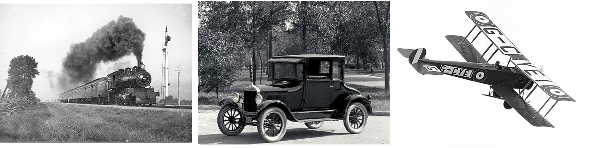
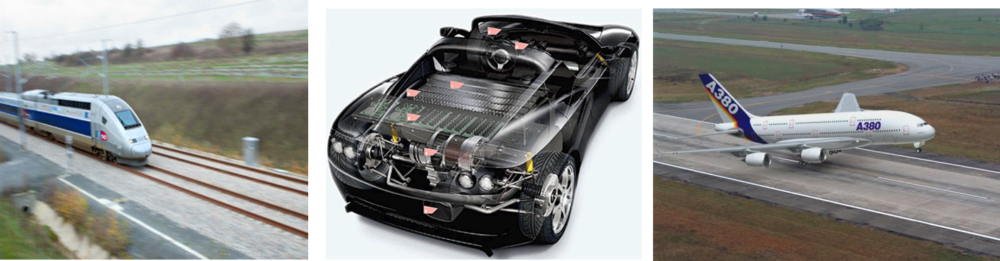
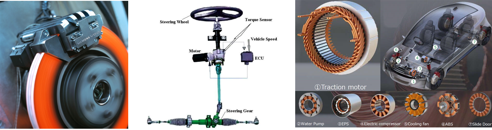
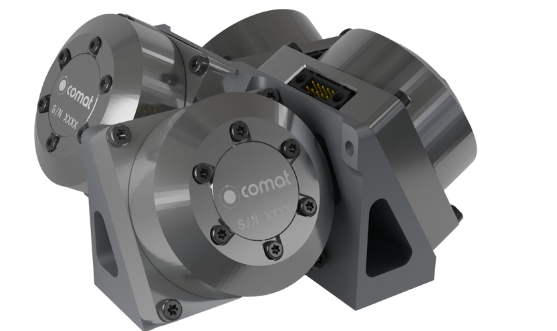

Complex technological systems and space systems#
Written by Marc Budinger, INSA Toulouse, France
From mechanical systems to complex technological systems#
Many mechanical systems have evolved into complex technological systems.
Under each figure, answer the following questions:
What are their functions, performance and reliability?
What technical fields are needed to design them?
Which engineers?


The car is typical of this evolution in technological systems.

Description
Electronic and computer technologies have been integrated into combustion-powered vehicles:
10 circuits (electrical and fluids)
12% value = IT, > 25 computers per vehicle
30% value other than mechanical
New architectures are seeing a multiplication of functions:
GPS, Mobile, Multimedia
Active safety (ABS, ESP, lane tracking, ADAS)
Power electronics, electric motors and electrochemical technologies are playing an increasingly important role in:
Driving assistance: electric steering, variable assistance and gear ratios
Propulsion systems: hybrid and electric
Energy storage: the price of the battery can represent 40 to 50% of the total price of the vehicle.
System definition#
The System Engineering Handbook of NASA define a system [Nasa, 2017] as:
A “system” is the combination of elements that function together to produce the capability required to meet a need. The elements include all hardware, software, equipment, facilities, personnel, processes, and procedures needed for this purpose; that is, all things required to produce system-level results. […] The value added by the system as a whole, beyond that contributed independently by the parts, is primarily created by the relationship among the parts; that is, how they are interconnected.
The aim of this teaching module is to introduce you to the approaches needed to design a system, particularly with regard to the following aspects:
-meet a need: functional analysis, preliminary design
-hardware, software: mechatronic and electronic technology, programming
-how they are interconnected: architecture, system simulation
through a space subsystem.
Space systems in New Space#
NewSpace refers to the emergence of a private-initiative space industry at the beginning of the 21st century, stimulated by certain governments to strengthen international competitiveness while guaranteeing strategic independence in key sectors.
Note: Connect by CNES is a CNES field programme launched in 2016 to support the development of new space in France.
NewSpace concern in particular a group of relatively new aerospace companies working to develop low-cost, public access to space exploration and space applications:
New Launchers: Latitude (formerly Venture Orbital Systems) is a French start-up based in Reims. It produces the Zephyr micro-launcher and its Navier 3D-printed engine to provide orbital launch services tailored to nano-satellites.

Nanosatellites constellations: Kineis is a French project for a constellation of nano-satellites designed to provide Internet of Things (IoT) services via satellite. The Kineis project is a continuation of the Argos system, which has been in existence since the 1980s. Hemeria supplies Kineis with the 25 nanosatellites of this 1st European nanosatellite constellation dedicated to the Internet of Things.

Ground applications: Naïo Technologies is a Toulouse-based start-up specialising in agricultural robotics. The company develops and markets robots for farmers designed to reduce drudgery at work. Robtos are autonomous thanks to RTK GNSS positionning (Real-time kinematic satelite positioning providing up to centimetre-level accuracy).

Cubesat platform#
Cubesats are nanosatellites using standardised formats (1 unit or 1U = 10 cm x 10 cm x 10 cm) and reusable technical subsystem kits supplied by an ecosystem of companies and start-ups.

The graphic below, called Work Breakdown Structure (WBS), shows how a cubesat satellite programme can be broken down into products of different sizes or levels of complexity Beale, 2006: systems, sub-systems, components, parts.

The Product Breakdown Structure (PBS) decomposes the studied system into products and the Work Breakdown Structure (WBS) complete this structure with the tasks [Faure, 2020]:
Products – Anything that can be built (e.g., structure), created (e.g., software), or bought (e.g., solar cells)
Tasks – The work (and the workpackages) that need to be executed throughout the project (e.g., manage requirements; perform vibration test; carry out the integration of the payload with the satellite bus)
Case study#
During this teaching module, you will have to put yourself in the role of a start-up wanting to offer kits enabling:
the thermal control of cubesats. Your first products will be for applications requiring heating, such as batteries, liquid propellant tanks, scientific experiments, etc. This type of product contains both hardware (temperature control components) and software (temperature control algorithms).
the attitude control of cubesats. Your first products will be a reaction wheel a basic technological building block for controlling the satellite’s attitude, which includes both hardware (inertia wheel, brushless motor, power electronics, magnetic sensors) and software (attitude control algorithms).
Reaction wheels of Comat 
Homework#
Read these documents: Les CubeSats en bref and Introduction to CubeSat Technologies
References#
[Nasa, 2017a] Hirshorn, S. R., Voss, L. D., & Bromley, L. K. (2017). Nasa systems engineering handbook (No. HQ-E-DAA-TN38707). Link
[Nasa, 2017b] Jamie, C., Roland, C., Justin, F., & Alicia, J. (2017). Basic concepts and processes for first-time CubeSat developers. CubeSat101, CaliforDesign of a CubeSat Testbednia. Link
[Beale, 2006] Beale, D., & Bonometti, J. (2006). Systems engineering (SE)-the systems design process. The Lunar Engineering Handbook, Auburg University, Auburn. Link
[Faure, 2020] Faure, P., (2020). SmallSats and Systems Engineering, California Polytechnic State University.Link